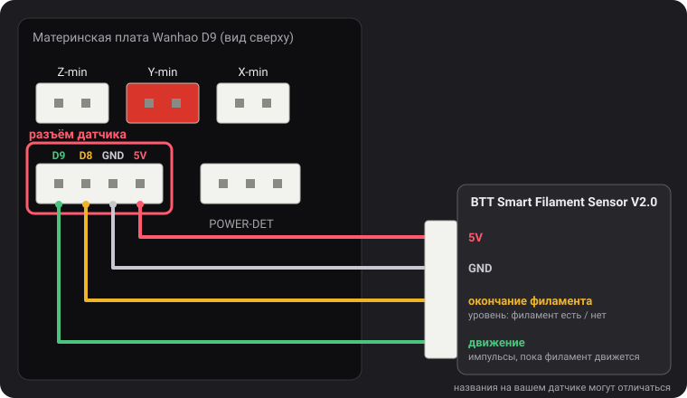
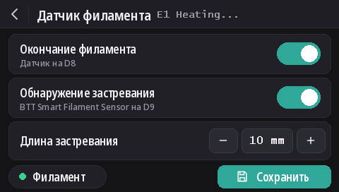

Датчики филамента
Начиная с v2.0.5 эти прошивки понимают два типа датчиков: датчик окончания филамента от Wanhao и BTT Smart Filament Sensor V2.0, который также замечает, что филамент перестал двигаться (запуталась катушка, застревание, сточенный филамент). Обнаружение окончания филамента включено по умолчанию на всех моделях, а обнаружение застревания выключено.
Разъём датчика

На 4-контактном разъёме слева от POWER-DET, под разъёмами концевиков, выведены D9, D8, GND и 5V, именно в таком порядке. Названия контактов взяты со схемы подключения Wanhao, которую нашёл dustovich и выложил в Discord; на обратной стороне платы те же четыре контакта подписаны CTRL, BTN, GND и VCC.
- D8 — вход датчика окончания филамента, который читает собственная прошивка Wanhao.
- D9 прошивкой Wanhao не используется: эти сборки читают на нём сигнал движения датчика BTT.
На экране
С DGUS Reloaded 2.0 на экране (прошивка v2.0.9 или новее): Настройки → Филамент → Датчик филамента.
- Окончание филамента включает или выключает всё обнаружение, как
M412 S1/M412 S0. - Обнаружение застревания включает обнаружение застревания с длиной, заданной ниже, или выключает его (
L0). - Длина застревания: − и + меняют её на 1 мм; коснитесь числа, чтобы ввести его.
- Точка Филамент горит зелёным, пока датчик окончания видит филамент, и красным, когда не видит.
- Изменения применяются сразу. Сохранить записывает их, как
M500. Стрелка «назад» выходит без сохранения: при следующем запуске вернутся сохранённые настройки.

Команды M412
Всё настраивается по USB из терминала последовательного порта (Pronterface, терминал вашего слайсера или OctoPrint,
250000 бод). Параметры можно объединять в одной команде, например M412 S1 L10.
| Команда | Что делает |
|---|---|
M412 | Показывает состояние, например Filament runout ON ; Distance 5.00mm ; Motion distance 0.00mm. |
M412 S1 | Включает обнаружение: датчик окончания, а также обнаружение застревания, если длина застревания не 0. |
M412 S0 | Выключает всё обнаружение: и окончание, и застревание. |
M412 D5 | Когда датчик перестаёт видеть филамент, печать продолжается ещё 5 мм до паузы, чтобы израсходовать филамент между датчиком и соплом. По умолчанию 5 мм. |
M412 L10 | Включает обнаружение застревания (только датчик BTT): пауза, если через экструдер прошло 10 мм филамента, а колёсико датчика не повернулось. |
M412 L0 | Выключает обнаружение застревания, не трогая датчик окончания. Это значение по умолчанию. |
M500 | Сохраняет настройки. Без этого изменение теряется при выключении принтера. |
M119 | В строке filament будет TRIGGERED, если филамент заправлен, и open, если нет. |
M412 L0, а также L без значения появились благодаря нашему изменению в Marlin
(MarlinFirmware/Marlin#28585), включённому в эти прошивки. В Marlin без него L
без значения игнорируется, а L0 сразу ставит печать на паузу как при застревании.
Датчик окончания филамента Wanhao
Он сообщает прошивке, есть ли филамент. Когда филамент заканчивается, печать встаёт на паузу ещё через 5 мм филамента, и экран запускает замену филамента.
Он включён по умолчанию на всех моделях начиная с v2.0.8. Если к D8 ничего не подключено, подтягивающий резистор на плате держит на контакте 5 В, что читается как «филамент есть»: обнаружение тогда никогда не срабатывает, поэтому его можно оставлять включённым независимо от того, стоит датчик или нет. Подключите датчик окончания к D8, и он сразу заработает.
- Обнаружение застревания остаётся выключенным (
L0): этот датчик не видит движения филамента. - Чтобы выключить датчик:
M412 S0, затемM500. - Настройки, сохранённые более ранним релизом, сохраняют своё состояние вкл./выкл. Чтобы включить:
M412 S1, затемM500, или сбросьте настройки по умолчанию (M502, затемM500; это также сотрёт ваш Z-offset датчика и сетку стола).
BTT Smart Filament Sensor V2.0
У этого датчика два выхода, и прошивка читает их по-разному:
- Датчик окончания (на D8) выдаёт уровень: 5 В, пока филамент есть, 0 В, когда он закончился.
- Выход движения (на D9) идёт от маленького колёсика, которое филамент вращает, проходя через датчик. Каждые несколько миллиметров филамента выход переключается между 0 В и 5 В. Прошивка следит только за этими переключениями: если экструдер протолкнул длину застревания, а переключения не было ни одного, филамент не подаётся (запуталась катушка, застревание, сточенный филамент), и печать встаёт на паузу. Датчик окончания этого не видит: при застревании филамент по-прежнему на месте.
Подключение
5V к 5V, GND к GND, сигнал датчика окончания к D8 и сигнал движения к D9. Названия на кабеле датчика могут отличаться.
Включение
M412 S1 L10
M500Если печать встаёт на паузу без причины, увеличьте длину застревания: M412 L15, затем M500. Чтобы оставить только
датчик окончания: M412 L0, затем M500.
Проверка
M412: Filament runout ON ; Distance 5.00mm ; Motion distance 10.00mm.M119с заправленным филаментом: filament: TRIGGERED. Если эта строка меняется, когда вы проталкиваете филамент рукой, а не когда вставляете или вынимаете его, два сигнальных провода перепутаны: поменяйте местами D8 и D9.
L0 не срабатывает
никогда), но с датчиком BTT пока не проверялось. Если датчик окончания читается наоборот (open при заправленном
филаменте), сообщите нам в Discord.Обновление с v2.0.5 или v2.0.6
В этих релизах нельзя было выключить обнаружение застревания, поэтому в них использовалась длина застревания, которая никогда не должна была достигаться: 100 м в
v2.0.5 (на деле слишком мало: примерно треть катушки на 1 кг, после чего оставленный включённым принтер мог встать на паузу без причины) и
10 км в v2.0.6. Прошивка v2.0.7 при запуске принтера загружает эти два значения как L0. Реальная длина, заданная вами
для датчика BTT, например L10, сохраняется. При обновлении с v2.0.4 или более ранней вместо 0, сохранённого этими версиями,
загружается расстояние окончания филамента 5 мм.